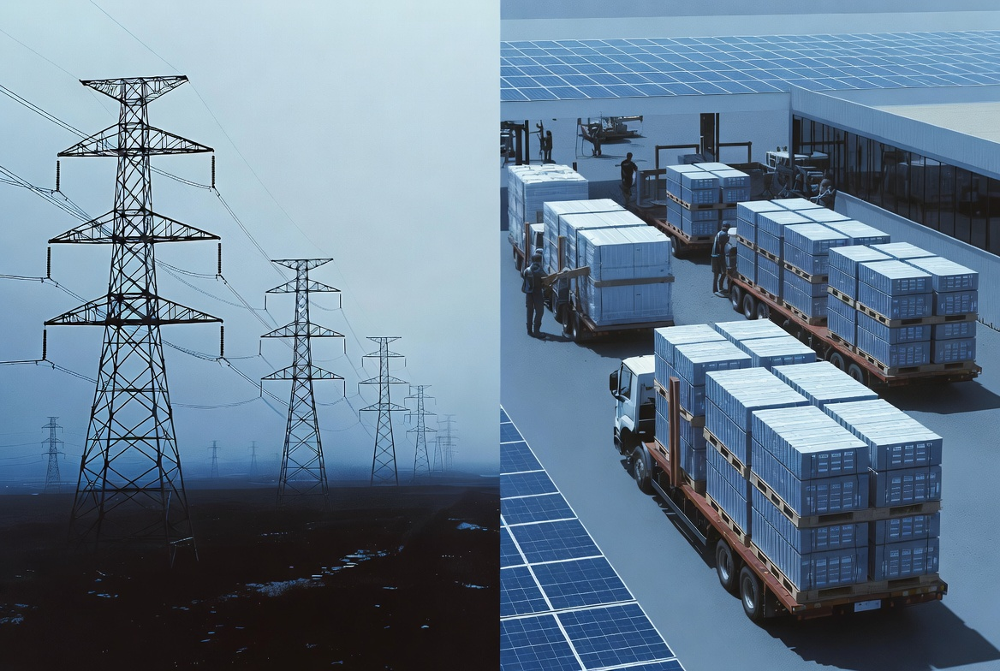
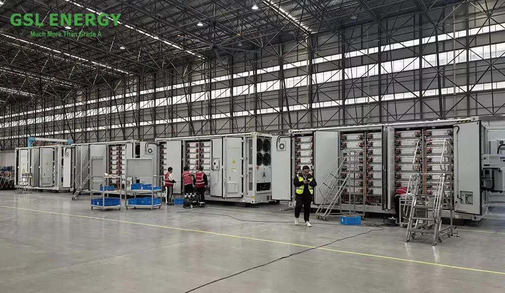
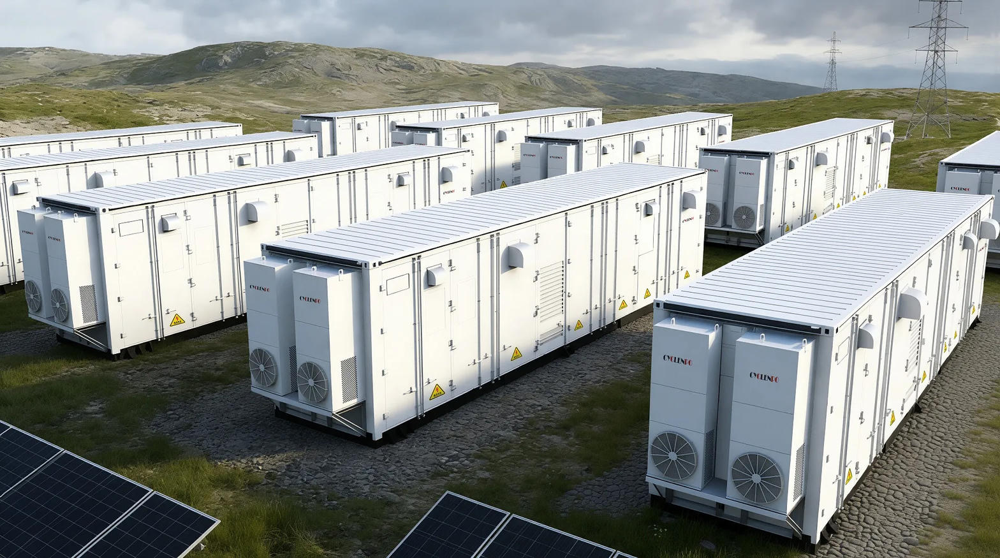

I’ve spent a lot of years watching systems. Arcade machines, patents, games, local power realities here in Fresno. One pattern keeps showing up: when you force a product through a fixed, inefficient channel, you pay a permanent tax. The electric grid is that channel.
Wires are brilliant for continuous power. They are terrible at letting the market (or physics) decide where value should be created. Generation has to be near enough to demand, or you accept the losses and the capital cost of more copper and steel stretching across the landscape. That geographic lock-in is the hidden inefficiency.
Change the form of the energy — make it a physical, standardized, movable asset — and the entire supply chain opens up. Suddenly any step that adds real work (charging, manufacturing, logistics, recycling) can locate itself where the physics and the economics actually work best.

The Wire Tax
Every mile of high-voltage line costs money to build and maintain. Every mile also loses a little energy as heat. By the time power reaches most homes and businesses, 5 to 8 percent of what was generated has already disappeared. That loss is baked in. You cannot innovate it away while the delivery method stays the same.
Worse, the fixed infrastructure decides the map. You do not put the cheapest solar or the most reliable nuclear plant in the absolute best location if the transmission corridor is not already there or will take a decade and a billion dollars to build. The system optimizes around the wires, not around the resource.
Interactive: Wire Loss vs Physical Delivery
Adjust the distance. Watch how the permanent tax of wires compounds while a physical commodity only pays the logistics cost once.
Turning Power into a Commodity
A standardized LiFePO4 pack is not a service. It is a physical object with a measurable quantity of energy inside it. That single change rewrites the rules.
Charging can happen where the electrons are cheapest and cleanest — desert solar fields at noon, excess hydro, nuclear baseload at night, whatever the market and the physics favor that day. The charged packs then move by truck, rail, or future autonomous logistics to the places people actually live and work.
Manufacturing of the packs themselves can sit near material sources or near ports. Recycling facilities can locate where the end-of-life volume concentrates. Every step that requires real work — real energy, real capital, real expertise — can insert itself at the geographic point of highest advantage. That is what economies of scale are supposed to allow.

Proof-of-Work Can Live Anywhere
In a wire system, the “work” of generation is chained to the demand centers or to the existing rights-of-way. In a physical commodity system, the work can float.
- Charge the packs where land is cheap and sun or wind is strong.
- Assemble modules near the lithium or iron phosphate processing.
- Run logistics hubs where transport corridors already exist.
- Place the final distribution points only as close to people as convenience requires — not as close as the physics of continuous current demands.
That flexibility is the real economies-of-scale win. You stop forcing every stage of the value chain to compromise with every other stage. Each stage optimizes for its own constraints.

Why This Matters for Freedom of Location
Once the energy itself is a physical unit that can be handed to a person, the old argument that “you have to live near the grid” starts to dissolve. A guaranteed daily floor of portable electricity — an entitlement that cannot be stripped — means anyone can take the minimum technology needed for a modern life and plant it almost anywhere, including places the wires will never reach.
That includes subterranean or earth-sheltered living, remote land, or simply the other side of the house from the charging point. The system no longer decides your geography. You do.
And because the heavy industrial work of making and charging those units can locate where it is most efficient, the total material and energy cost of supporting that freedom can actually drop compared with stretching copper to every new settlement.
High Tower Context
Here in the Tower District we already understand the cost of depending on systems you do not control. Turning the kilowatt into something you can carry changes the leverage. It is not anti-grid. It is pro-option. The grid can still serve continuous high loads. The physical commodity serves the rest of human settlement — including the parts of Fresno and the Valley that have always been on the edge of the map.
Economies of scale only deliver when the product itself is free to move to the optimal location for each stage of its life. Wires prevent that. Standardized physical energy packets restore it. That is the quiet revolution sitting inside every LiFePO4 module.
Make the electron a commodity, and the work of creating it can finally live where it belongs.
High Tower District Stories
Independent systems thinking from Fresno’s Tower District.
More StoriesSources & Context
- U.S. Energy Information Administration — transmission and distribution loss data (typical 5–8% range for end-use delivery)
- Industry LiFePO4 round-trip efficiency figures (commonly 90–95% for modern systems under normal conditions)
- Observed growth in off-grid solar + battery deployments (GOGLA / IRENA reporting, 2025–2026)
- Prior High Tower District analysis on physical energy entitlements and settlement freedom
This is an independent systems analysis. Not a policy proposal or investment recommendation.